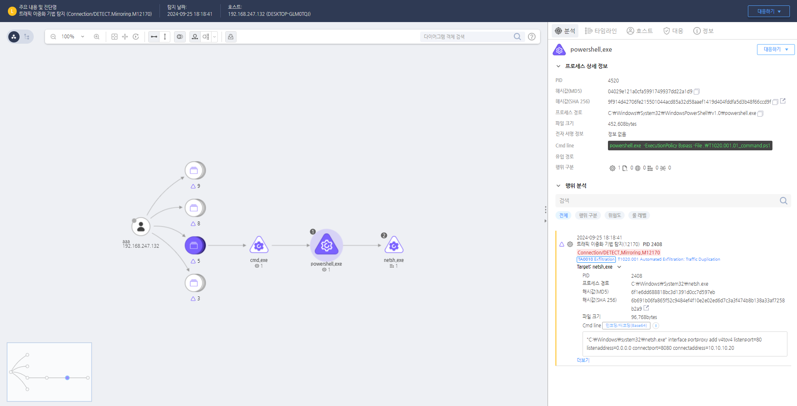

T1020.001.01 자동 유출: 트래픽 미러링
D3FEND
MITRE ATT&CK 액션을 기준으로 대응 방안을 작성
Detection
Action = "ProcessCreate" AND
TargetProcess = "netsh.exe" AND
Cmdline = "interface" AND
Cmdline = "portproxy" AND
Cmdline = "add" AND
Cmdline = "v4tov4" AND
Cmdline = "listenport" AND
Cmdline = "connectaddress"
Detection(EDR)

https://172.18.10.125:8903/#/analysis/alert/66f3d492002dc795000000f5
Response
- 트래픽 미러링 탐지 및 분석: 네트워크 장비에서 예상치 않은 트래픽 미러링 설정을 정기적으로 점검합니다. 트래픽 패턴을 분석하여 비정상적인 복제나 리다이렉션을 식별하고, 특정 프로토콜이나 증가된 트래픽 양을 확인합니다.
- 네트워크 장비 및 시스템 감사: 네트워크 장비의 SPAN 포트 및 패킷 미러링 설정을 주기적으로 검토합니다. 방화벽 및 라우터의 ACL을 점검하고 비정상적인 트래픽을 차단합니다.
- 네트워크 패킷 캡처 및 포렌식 분석: 의심스러운 구간의 패킷을 캡처하여 출발지, 목적지, 프로토콜 등을 분석합니다. 비정상적인 패턴을 식별하여 공격자의 의도를 파악하고 침해 구간을 격리합니다.
- 손상된 시스템 및 네트워크 격리: 미러링 또는 리다이렉션이 의심되는 시스템을 신속히 격리하고, 네트워크 장비를 복구하여 공격자가 설정한 변경 사항을 제거합니다.
- 침해 사고 보고 및 복구: 침해 사고 발생 시 즉시 보고서를 작성하고, 손상된 시스템을 복구합니다. 재발 방지를 위한 보안 모니터링과 교육을 강화합니다.
Mitigations
- 네트워크 장비 및 시스템 보호:
- 설정 변경 권한을 제한하고 다중 인증을 요구하여 설정 변경을 방지합니다.
- 설정을 주기적으로 백업하고 강력한 패스워드 정책을 적용합니다.
- 네트워크 트래픽 모니터링 강화:
- SIEM 및 NMS를 활용하여 실시간 트래픽 모니터링을 실시하고, 비정상적인 패턴이 탐지되면 경고를 발생시킵니다.
- 보안 정책 및 규칙 설정:
- 트래픽 미러링 및 리다이렉션 설정을 엄격히 관리하고, ACL을 통해 외부 트래픽을 제한합니다.
- IPS 및 IDS 활용:
- 실시간으로 트래픽을 분석하고 비정상적인 시도를 탐지 및 차단합니다. 규칙을 주기적으로 업데이트하여 새로운 기법을 탐지할 수 있도록 합니다.
- 내부 사용자 교육:
- 네트워크 설정 변경 및 미러링 위험성을 교육하고, 예상치 못한 변경 발견 시 보안 부서에 즉시 보고하도록 합니다.
Affected Techniques
Action 실행시 함께 영향을 받는 다른 Techniqes
| D3FEND |
| D3-FIM File Integrity Monitoring |
| D3-ISL Local File Access Mediation |
| D3-NTF Network Traffic Filtering |
| D3-ISL Execution Isolation |
| D3-ISL Application-based Process Isolation |